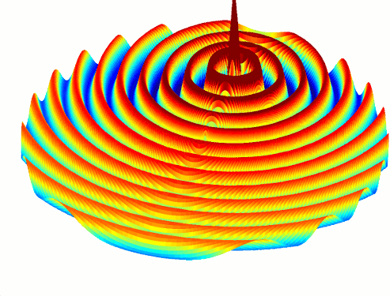

Homepage
HomepageWhat is openEMS?
Welcome! openEMS is a free and open electromagnetic field solver using the FDTD method.
Matlab or Octave are used as an easy and flexible scripting interface.
It features:
- fully 3D Cartesian and cylindrical coordinates graded mesh.
- Multi-threading, SIMD (SSE) and MPI support for high speed FDTD.
For a more extensive list of features have a look at the openEMS features.
Download openEMS 
openEMS is available for Windows & Linux. Use the installation guide for further information. Download here:
- Linux build instructions.
- Source package (older versions here).
- Win 64bit (older versions here).
News and Anouncements
- 08.11.2018: openEMS.de is back up on a new host. Read more here!
- 18.02.2017: openEMS release v0.0.35!
- 12.05.2016: Release of v0.0.34!
- 10.10.2015: Release of v0.0.33!
License & Reference
- openEMS is licensed under the GNU GPL, Version 3 or later.
- CSXCAD is licensed under the GNU LGPL, Version 3 or later.
- We kindly ask you to reference openEMS in any publication that you were using openEMS for.
- Have a look at the list of publications referencing openEMS: List of publications.